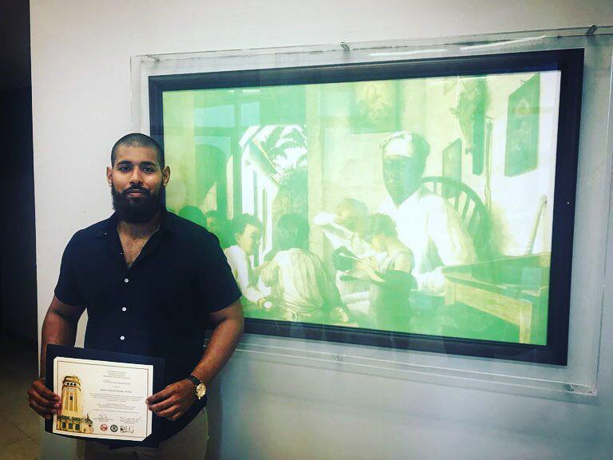
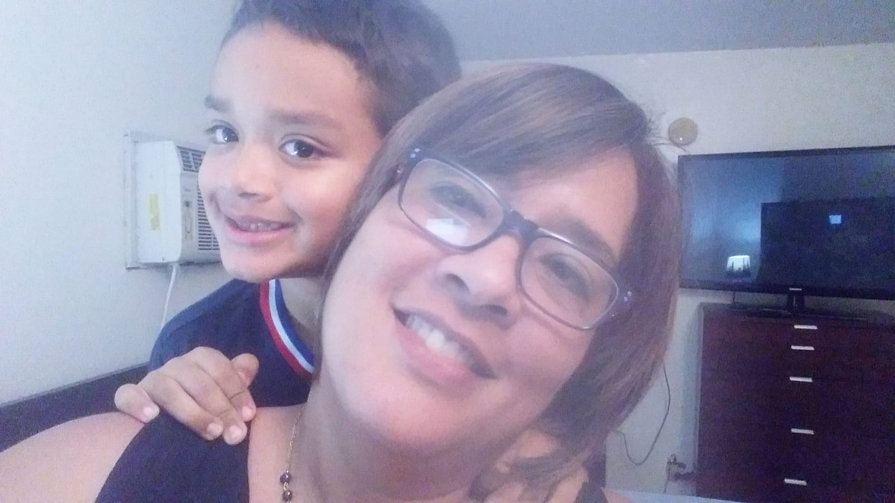
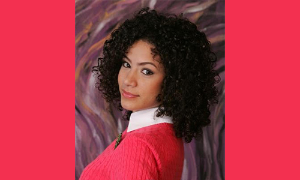
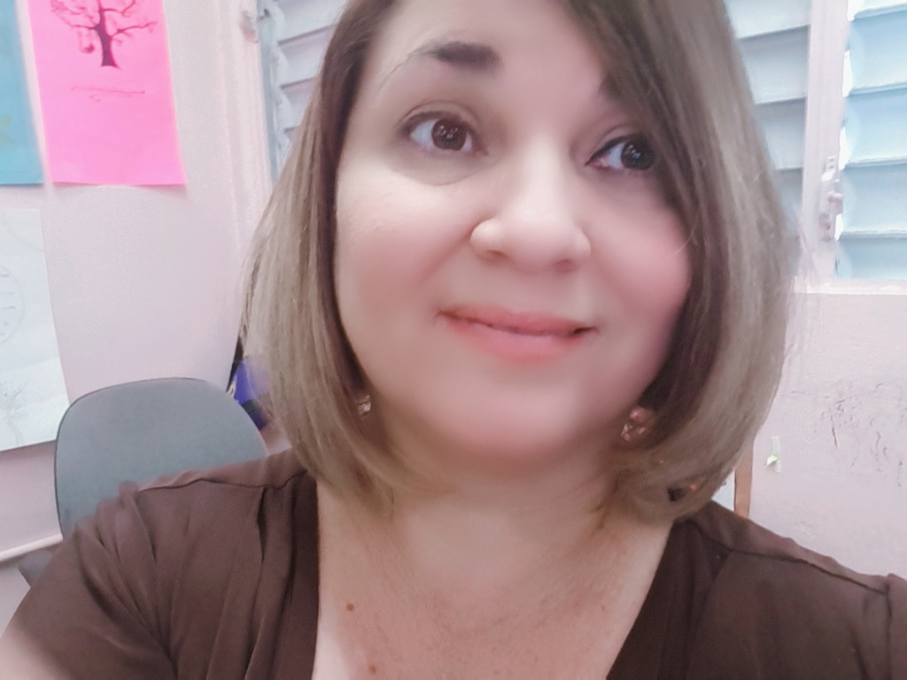
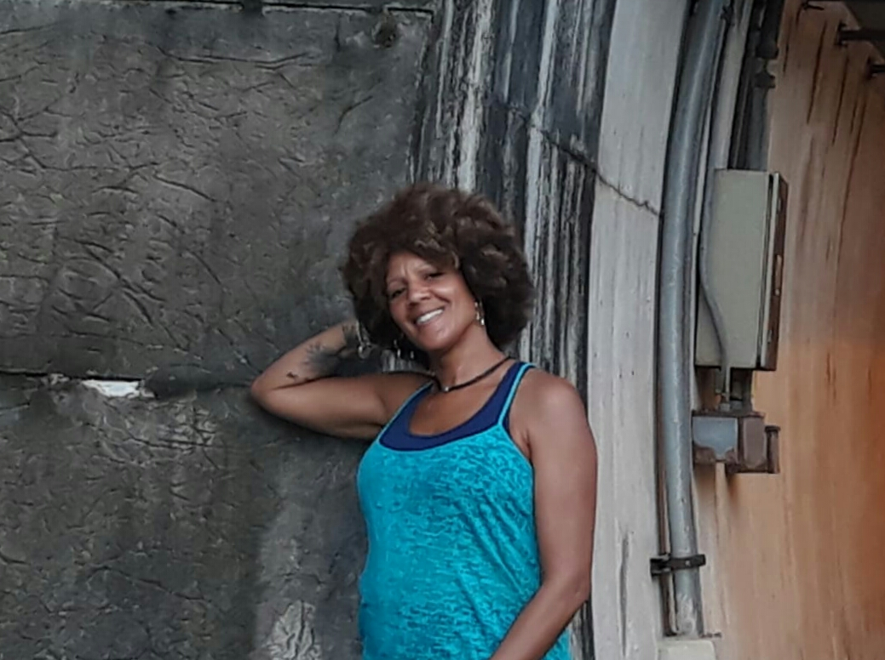
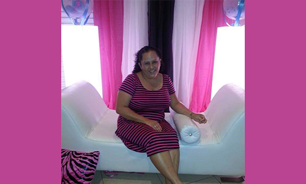
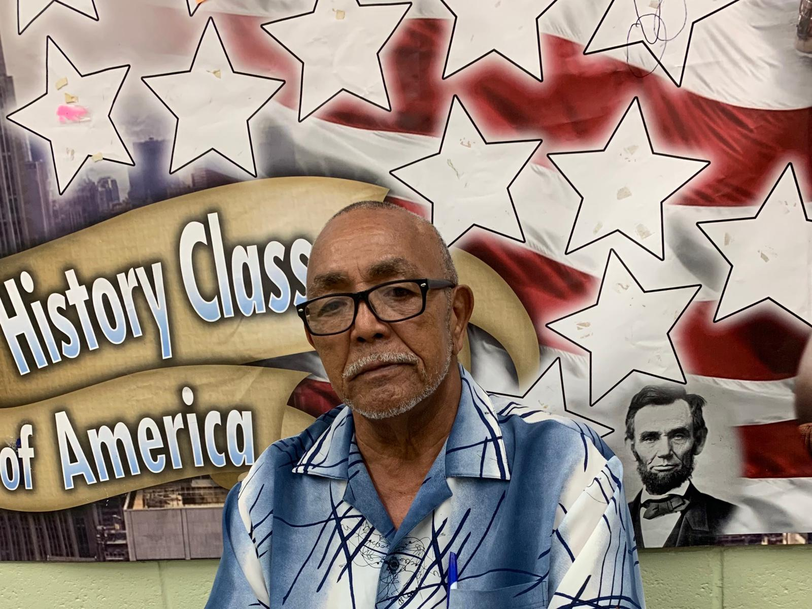
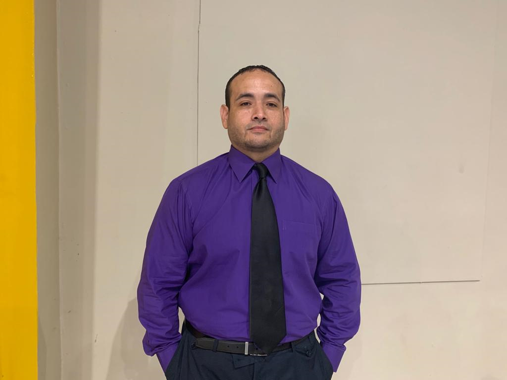
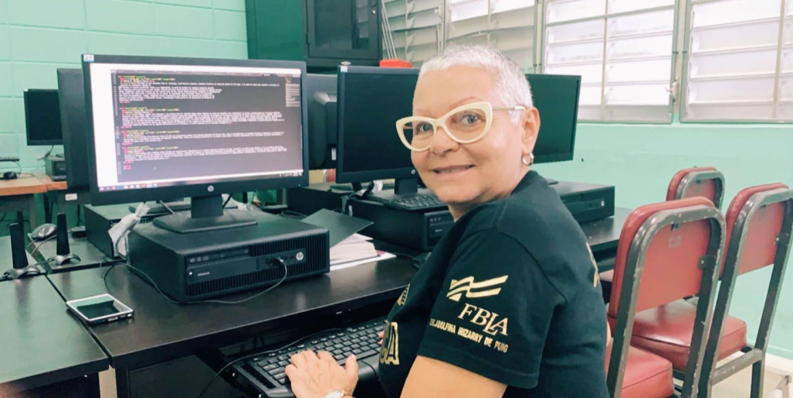

Gabriel Lasanta
Miembro de una familia puertorriqueña y panameña. Realizó estudios de bachillerato en Educación Secundaria con especialidad en Historia y Estudios Sociales en la Universidad de Puerto Rico, Recinto de Rio Piedras en el año 2013. Posee dos licencias expedidas por el Departamento de Educación, una en Historia y otra en Estudios Sociales. Sus destrezas como líder y compromiso social, le merecieron la dedicatoria de la graduación de sus estudiantes de duodécimo grado en el año 2015. Hasta el presente ha enseñado distintas disciplinas relacionadas al campo de la Historia y los Estudios Sociales: Sociología, Economía, Ética Social, Historia en Contexto, Historia de Puerto Rico, Historia de Estados Unidos e Historia de Latinoamérica. Completó su Maestría con honores en el 2018; adquiriendo dominio teórico y práctico de los distintos diseños curriculares en Historia y Estudios Sociales. Su tesis de investigación, titulada Currículo Oculto y dialogicidad crítica: instrumentos para comprender las relaciones de poder dentro de la escuela pública fue distinguida en los Actos de Logros y Excelencia Académica de la Facultad de Educación del Recinto UPR en Rio Piedras en diciembre del año 2018. Luego la misma fue presentada en Cuba, en el prestigioso Encuentro Pedagógico Cuba 2019, donde obtuvo dos certificaciones y 9 créditos de formación profesional. Su compromiso con el magisterio lo ha vinculado con proyectos relacionados a la Educación y transformación social-comunitaria, funge como activista y delegado sindical de la Federación de Maestr@s de Puerto Rico, una de sus tareas es coordinar actividades de formación pedagógica-sindical. Además, es miembro del comité timón del Movimiento Al Rescate De Mi Escuela, agrupación que rescata escuelas declaradas en desuso.

Alechca Hernández
Tengo un bachillerato en Salud Escolar de la Universidad Interamericana de Puerto Rico. Comencé en el Departamento de Educación en el año 2010. Ofrezco cursos de Salud Escolar, Sexualidad y Nutrición. Por el momento soy la maestra consejera del Club de Enfermería. Este año (2019) por primera vez se pudo realizar la Feria de Salud en la escuela donde se pudo impactar los estudiantes, maestros y la comunidad.

Nilza E. Mojica Cruz
Soy Profesora de Español Secundario. Poseo Doctorado en Filosofía y Letras del Centro de Estudios Avanzado de Puerto Rico y el Caribe. Mi tesis doctoral tiene por título El hablante lírico en el lenguaje metafórico de Angelamaría Dávila Malavé. Actualmente, ostento las siguientes certificaciones: Maestra de Español-nivel secundario (Vitalicio), Maestra de Nivel Elemental, Facilitador Docente de Español, Directora Escolar K-12 y Especialista en Currículo de Español del Departamento de Educación. He sido educadora por veintiocho años y seis meses en el Departamento de Educación. Imparto los cursos de Español Avanzado a los jóvenes de duodécimo y Español Regular a los de undécimo grado. En años anteriores, he coordinado la revista Literamundi con estudiantes y exalumnos de la escuela. Asimismo, he dirigido el proyecto especial de Fotoperiodismo. Esto con el fin de publicar el periódico escolar Tu momento social y en estos momentos se reconoce como Tu periódico líder.
Profa. Peggy S. Nieto
La Profa. Peggy Nieto posee un Bachillerato en Inglés de la Universidad de Puerto Rico, Recinto de Cayey, una Maestría en Currículo e Instrucción en Inglés, una Maestría en Administración Escolar y 62 créditos a nivel Doctoral en liderazgo, Currículo e Instrucción de la Universidad de Phoenix. Posee Certificación y Licencias en: Maestra Inglés Elemental, Maestra Inglés Superior, Maestra de Escuela Elemental, Especialista de Currículo y Facilitadora Docente de Inglés. Ha trabajado en el Departamento de Educación de PR por 28 años, de los cuales, estuvo de Directora Escolar por tres años de esta su Escuela Adolfina Irizarry de Puig. Ha trabajado desde kinder a nivel universitario. La Profa. Peggy Nieto se destaca actualmente como maestra de Inglés de duodécimo y noveno grado y es además la consejera docente del Consejo de Estudiantes.

Nedynia López Correa
Estudió un Bachillerato en Lenguas Modernas con un minor en Inglés en la Universidad de Puerto Rico, Río Piedras. Obtuvo luego, la certificación como maestra en la Universidad de PR en Cayey. Realizó una maestría en la enseñanza del inglés como segundo idioma en la Universidad de Phoenix, Guaynabo, PR. Actualmente tiene 27 años como maestra en el Departamento de Educación. Realmente son 30 años como maestra porque trabajó tres años anteriormente con el Instituto de Banca. Tiene además, un Grado Asociado en Teología y continúa estudiando.

Cristina A. Rivera Álvarez
Cristina A. Rivera Alvarez realizó un Bachillerato en Educación Secundaria en Artes Visuales / Universidad de Rio Piedras en PR. Actualmente es maestra del Departamento de Educación & Profesora en la Escuela de Artes Plástica en San Juan, ofreciendo el curso de Mosaico y Vidrio Fundido. Posee 7 años de experiencia. Posee certificado de maestro- PCMAS

Ana Roman Sánchez
Graduada de la UPR de Carolina en Sistema de Oficina. Obtuvo
30 créditos en educación y 30 créditos en matemática de la
UPR recimto de Río Piedras. Posee licencia en matemática y
educación comercial del Departamento de Educación de Puerto Rico. Cuenta con 22 años de experiencia en el sistema de educación.

Sonia E. Escalera Flores
Estudió en las escuelas Luis M. Santiago, José Nevárez Landrón, Adolfina Irizarry de Puig del pueblo de Toa Baja. A la edad de nueve años comenzó a practicar el deporte de atletismo siendo el
800 metros su evento preferido. Dado a su dedicación, se ganó el premio de campeona nacional juvenil
PR, campeona centroamericana y del caribe. Obtuvó una beca universitaria de la Universidad de Sagrado Corazón
donde compitió y ganó los eventos en los cuatro años de las Justas Universitarias. Completó su bachillerato
en ciencias del ejercicio y promoción de la salud. Se desempeñó como evaluador físico en gimnasios
del área metropolitana. Luego, completó cursos conducentes para obtener la licencia de maestra en la
materia de salud escolar y educación física. Actualmente forma parte de la Asociación de Árbitros de
Atletismo del Norte.

Sara N. Bonilla López
Hola, quiero que conozcas a la maestra Sara N. Bonilla López quien imparte la clase de español a los estudiantes de noveno y décimo grado de la Escuela Adolfina Irizarry de Puig desde 2016. La profesora Bonilla estudió educación secundaria en la materia de español en la American University of Puerto Rico en Hato Tejas, Bayamón. Hija de un pastor retirado a quien honra con sus cuidados y demostración de gratitud. Tuvo la bendición, hace 30 años, de haber estudiado en la misma escuela que ahora trabaja. Anteriormente trabajó en la escuela Marcelino Canino en el barrio Maguayo de Dorado y la Pedro López Canino en el barrio Espinosa, también en Dorado. La profesora Bonilla tiene 18 años de experiencia en el magisterio dentro del Departamento de Educación en los cuales ha contribuido en la participación de muchas actividades educativas y extracurriculares demostrando el liderazgo adquirido dentro de la iglesia Defensores de Fe Cristiana y a nivel nacional de su concilio evangélico.

Carlos Cruz
Carlos Cruz Durecut tiene 27 años de experiencia dentro del Sistema Educativo de Puerto Rico. Hizo un Bachillerato en Estudios Sociales e Historia y una Maestría en Curriculum en la Caribbean University de Bayamón, Puerto Rico. Posee una Licencia Vitalicia en la materia que enseña. Su basta experiencia le ha concedido cuantioso conocimiento a través de estos años como maestro.

Edgar Díaz
Edgar Díaz Padilla tiene 18 años de experiencias adquiridos en la escuela Adolfina Irizarry de Puig. Estudió en la UPR de Rio Piedras y en la Caribbean University Recinto de Bayamón en los que obtuvo un Bachillerato. Además, realizó 30 créditos en Educación Secundaria en Matemáticas. Logró certificaciones en Física, Química, Ciencias Generales y Matemáticas. Con las que ha podido ser maestro en diferentes materias. En su tiempo como maestro ha participado en organizaciones estudiantiles, fue maestro colaborador en FBLA Y DECA y maestro consejero en clases graduandas.

Juana González
Desde 2014 trabaja como maestra de Educación Comercial en nuestra escuela impartiendo cursos de Contabilidad, Desarrollo Empresarial, Finanzas Personales y Economía, entre otros. El año pasado se le retó a implementar el Programa de Asistente en Información Tecnológica, se arremangó la camisa y aceptó la difícil y gratificante tarea de levantar un programa que requiere el estudio continuo de la computación y aplicación en diferentes sistemas computacionales.
Graduada en Artes en la Universidad Interamericana, Recinto Metropolitano con especialidad en Contabilidad y Gerencia. Completó Maestría en Artes en Educación con especialidad en Tecnología Educativa en Sistemas de Instrucción. Posee certificaciones por el Departamento de Educación de Puerto Rico que le facultan ejercer como maestra de contabilidad y como especialista en tecnología educativa.
Como líder comunitario ha trabajado en proyectos dirigidos hacia el desarrollo de comunidades en desventaja en prevención de SIDA, autosuficiencia económica y alfabetización.